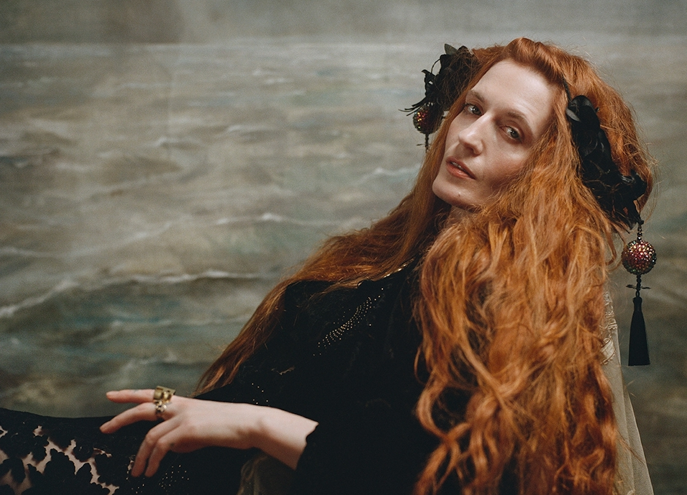

The Tortured Poets Department
¡Hace click en “PARTICIPO" y obtené un fragmento unico del próximo álbum de TayTay!
¡PARTICIPO!¡Hace click en “PARTICIPO" y obtené un fragmento unico del próximo álbum de TayTay!
¡PARTICIPO!Estos discos fueron los ultimos lanzamientos de Taylor ¡Midnights la condujo a dos Grammys!
Folklore evita el pop alegre de los álbumes anteriores de Swift para baladas suaves impulsadas por el piano y la guitarra.
Evermore cuenta con apariciones especiales de las bandas estadounidenses Bon Iver, Haim y The National.
Según Taylor,Midnights es como una obra que resume "un viaje a través de terroríficos y dulces sueños.
Taylor ya revelo a traves de Instagram un fragmento de su nuevo disco
¿Vos que estás esperando para escucharlo? ¡Clickea el botón y accedé al adelanto exclusivo!
Cuando parecía que todo estaba listo para Reputation (Taylor's Version) llega nuestra rubia favorita para anunciar TTPD y dejarnos con la intriga no solo de un nuevo álbum, sino de cuando se relanzará Reputation.
¡PARTICIPO!Una hermosa noche que premió a Taylor con dos grammys y a millones de fans con un anuncio que paró corazones.
¿Querés escuchar un adelanto? ¡Clickea en “PARTICIPO" y rápidamente obtené un audio exclusivo.
¿Ya viste los featurings palaneados para The Tortured Poets Department? ¡Ya hay asegurado un Top 3!
Este cantante, rapero y compositor estadounidense cuenta con éxitos como "Rockstar" y "Circles" y se consolido como una figura versátil en la industria musical.
La banda que supo conquistarnos con "Dog Days Are Over" no dudo nunca de expresar su admiración por Taylor ¡al fin pudieron concretar una colaboración!
